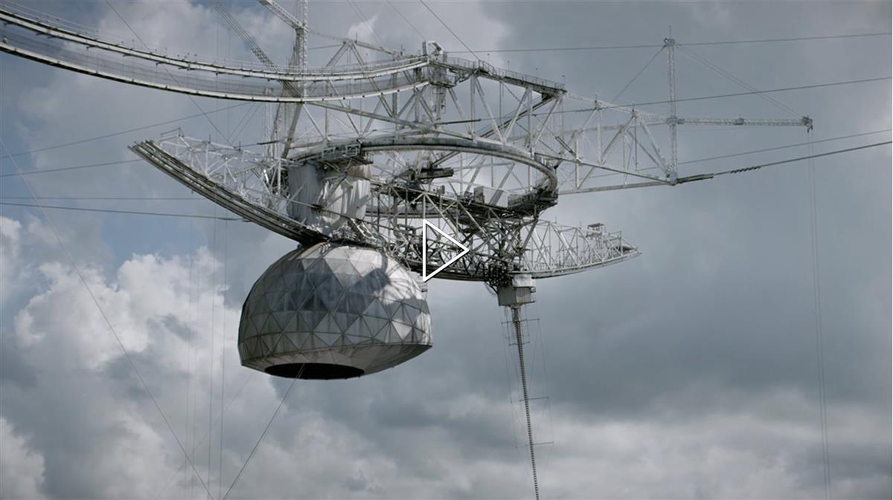

Art for Hope
2022
ART 2030
Related Global Goals
12: Responsible Consumption and Production
13: Climate Action
17: Partnerships for the Goals
Art for Hope is a multi-format initiative aiming to inspire behavioural change for a brighter future through artistic practices and cross-sectoral partnerships.
Art for Hope launched with The Hope Forum during the opening of the 59th Venice Biennale and is running through the 77th United Nations General Assembly and COP 27. The initiative explores how the art ecosystem can respond to the climate catastrophe and create real change for the future of our planet, through panel discussions, digital campaigns and political advocacy.
Art for Hope Campaign
Through ART 2030, the United Nations President of the General Assembly, UNESCO and UNFCCC, invited artists, museums, and non-profits from around the world to share statements of the urgency of action for our planet.
From September to November, coinciding with the 77th opening of the UN General Assembly and COP27, ART 2030’s Art for Hope campaign works with visionary stakeholders across the art sector to spread knowledge about leading artists and art institutions’ concrete actions to inspire hope and change for a healthier planet and brighter future.
Statements straight to world leaders
Directed straight to world leaders, politicians, and all levels of society, video messages from the international art ecosystem respond to the climate and biodiversity catastrophes. Video statements first presented to an invite-only group of trailblazers in the art sector and high-level representation from the United Nations at ART 2030’s The Hope Forum, will now be premiered publicly during the opening of the 77th UN General Assembly to strengthen momentum and consolidate art’s role in creating a global behavioural change.
If we unite across sectors and manage to create better cohesion between our efforts, we can still heal Earth’s ecosystems and turn our destruction to restoration. Together, we can inspire hope.
Changemaker Statements
Every week between the opening of the 77th UN General Assembly and COP27, Art for Hope will premiere a series of powerful statements made by leading Changemakers from the international art ecosystem. Here are the first three:

Allora and Calzadilla
Adopted from the work 'The Great Silence' Allora & Calzadilla's video work is a direct message to the United Nations. Examining extinction from its very core, the work urges policymakers to let more sensitivity and planetary care into the decision-making.
Museum of Contemporary Art, Los Angeles
Johanna Burton, The Maurice Marciano Director of the Museum of Contemporary Art (MOCA) in Los Angeles speaks about the museum's newly established Environmental Council, the first of its kind in the United States, and what practical actions they have taken to create their first ever net zero exhibition in collaboration with artist Pipilotti Rist as a concrete action for a sustainable future.
Yin Xiuzhen
Through participatory works Yin Xiuzhen calls for responsible and united actions to preserve our planet. The work 'Washing River' is executed in different parts of the world. She takes polluted water and freezes it into ice bricks, then place them at the riverside and invites people to wash the river. A powerful metaphor, to remind us that standing together is the only way to overcome the challenges we face.
Contributing Changemakers
Artists, Museums, Nonprofits and alliances from the international art world have contributed with powerful messages to world leaders, policy makers, and all layers of society. Changemaker Statements will be premiered on this page during the Art for Hope digital campagin:
Abraham Cruzvillegas
Allora & Calzadilla
Art into Acres
Diana Thater
Ernesto Neto
Gallery Climate Coalition
The Helen Frankenthaler Foundation
Jeppe Hein
John Gerrard
Julie’s Bicycle
Julius von Bismarck
Michelangelo Pistoletto
MOCA, Museum of Contemporary Art Los Angeles
PACT, Partners for Arts Climate Targets
Raqs Media Collective
SUPERFLEX
TBA21–Academy
teamLab
Yin Xiuzhen
UN Touchpoints
77th Session of the UN General Assembly (UNGA 77)
UNESCO’s World Conference on Cultural Policies and Sustainable Development – Mondiacult
UN Climate Change Conference, COP27
SOURCE: ART 2030